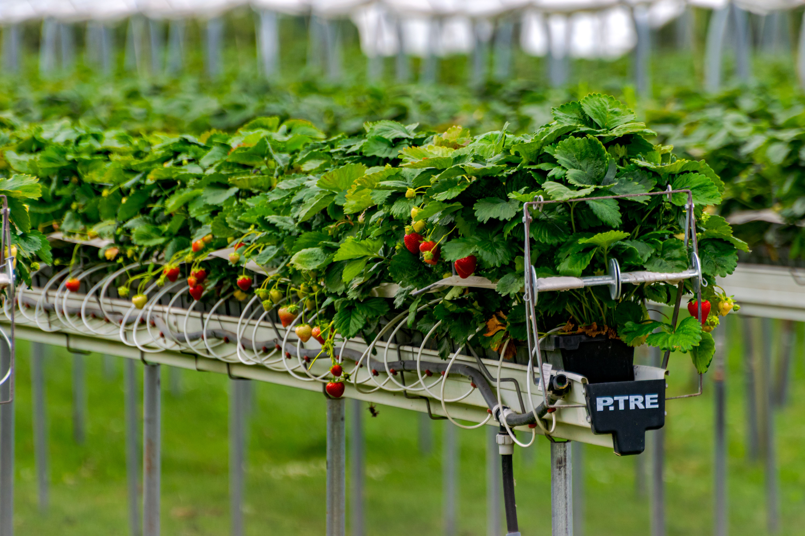

News
Qela and the growing role of digital agriculture
Discover how digital technology is supporting better agricultural operations and decision making.
Discover how digital technology is supporting better agricultural operations and decision making.
See how connected digital systems can help agricultural organizations manage information.

Learn how digital innovation is creating new opportunities across agricultural value chains.

Learn how farmers can use digital tools to improve productivity and farm management.
Understand why reliable agricultural data is important for planning and better decisions.
Explore practical ways technology can connect agricultural processes and information.
Explore how digital systems can improve cooperative management, records and member services.
Explore the role of agricultural data in improving planning and digital decision making.
Understanding how agricultural data can support planning, monitoring and informed decisions.